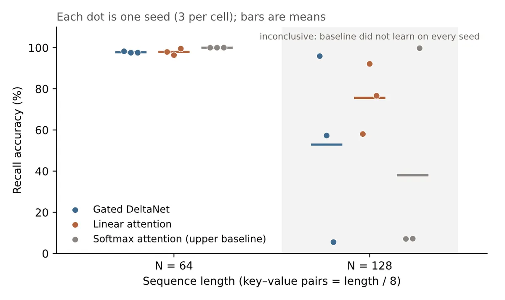

2026 · Qwen3.5-0.8B, CPU, 3 seeds
Replicate SOTA
Qwen3.5-0.8B rebuilt from scratch matches the official model at every position on 8 test prompts; the largest score gap is 3.8×10⁻⁵.
The question
Can a current open-weights model be rebuilt from its paper and config alone, and shown to match the official one exactly? And does its key new idea hold up in a small test of its own?
Qwen3.5-0.8B (February 2026) uses ordinary attention in only 6 of its 24 layers. The other 18 are Gated DeltaNet, a linear-attention layer with a fixed-size memory that it corrects: it writes only the part of a new value the memory gets wrong, where plain linear attention adds every new value on top.
Setup
The rebuild is plain PyTorch, written from scratch and loaded with the official weights. It is checked against the official transformers model on 8 prompts, from a single token to 4,534 tokens, in English, code, Chinese, emoji and repeated text. A match means every next-token score at every position is within 10⁻⁴ of the official one, a threshold fixed at 10⁻³ before the first run and tightened after.
The recall test is multi-query associative recall (MQAR, from Zoology): two-layer models of 0.17M parameters, width 64, 1,500 training steps on a CPU and 3 seeds per cell. The hypothesis, fixed before running: Gated DeltaNet beats plain linear attention at every length by more than the seed spread. Softmax attention is the upper baseline.
How it works
- Read the paper and config
- Rebuild in plain PyTorch
- Load the official weights
- Compare every score on 8 prompts
- Recall test: three mixers, 3 seeds
- Report against the fixed hypothesis
Results
The rebuild matches on all 8 prompts. The largest gap in any next-token score is 3.8×10⁻⁵ (on the 4,534-token prompt), the top token agrees at every position, and 32 tokens of greedy decoding come out the same. The official model ran on a newer PyTorch than the rebuild, so the match holds across versions.
At length 64, recall is a tie: Gated DeltaNet 97.8%, linear attention 97.9%, softmax 100%. Gated DeltaNet trails by 0.2 points, well inside the seed spread, so the hypothesis isn’t supported there.

What didn’t work
Length 128 is inconclusive. Softmax attention can solve the task, yet learned it on only 1 of 3 seeds. The runs are all-or-nothing within 1,500 steps, so the averages measure how fast training takes off, not how much the memory holds. The rule that a length counts only if softmax reaches 90% on every seed was added after seeing the results.
The models are tiny, with a single learning rate, and the task vocabulary is smaller than Zoology’s. Both linear layers needed Qwen’s short convolution to learn at all, added after a pilot. This is one claim on one toy task, not the papers’ benchmark.
What’s next
Rerun length 128 with about 4,000 steps, then length 256.